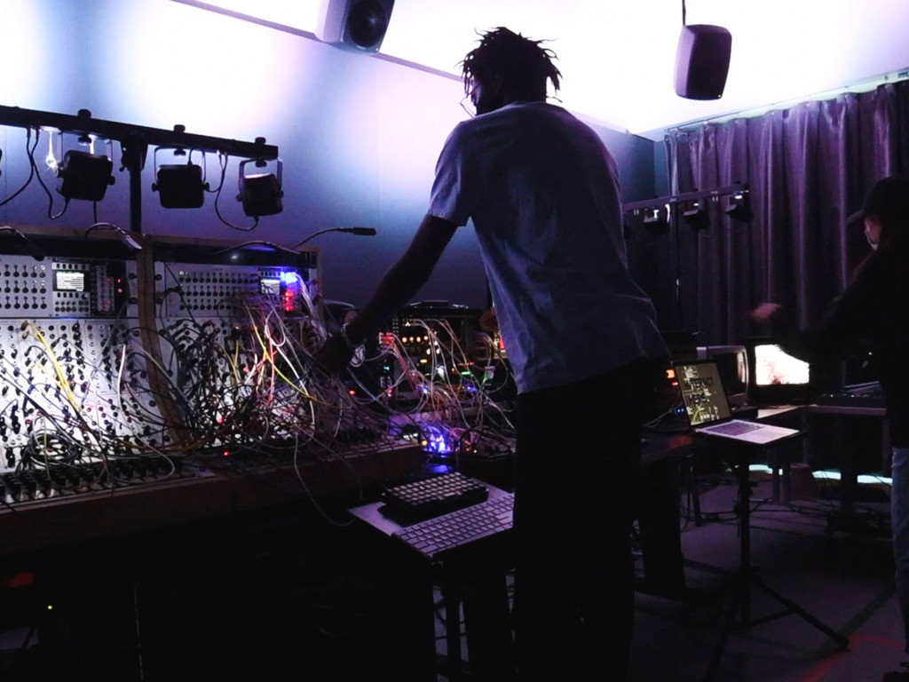
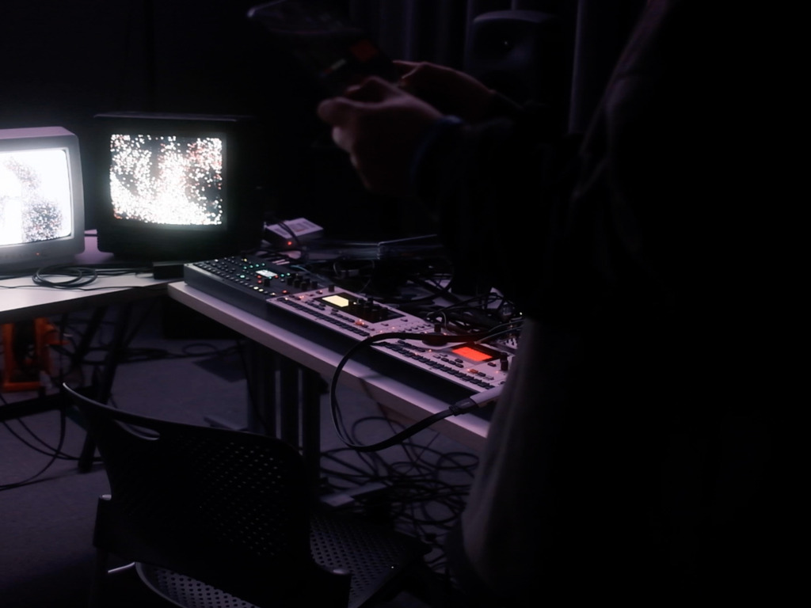
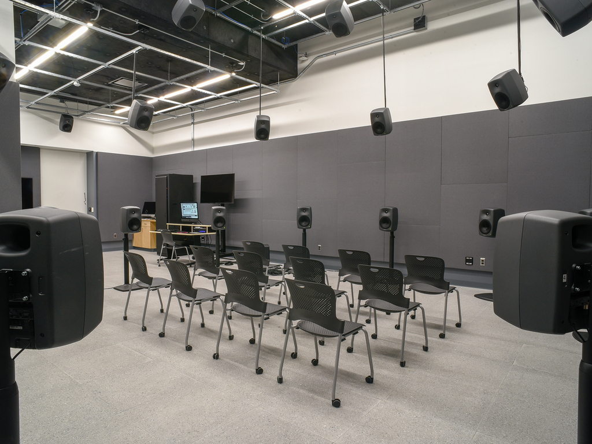

Performance for Of Sound and Vision Wintersession Course in collaboration with Haram Lee

Using the Serge Modular Synthesizer, My personal Eurorack Modular Synth, Max MSP, Reaper, The 25.4 Speaker Array and the Electron Monomachine, Machinedrum and Octatrack


updated 03/20/24 – femi.fleming@gmail.com